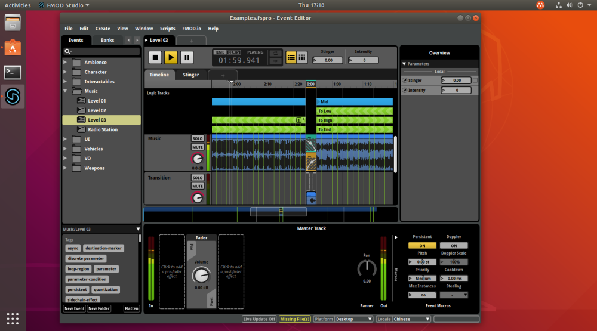
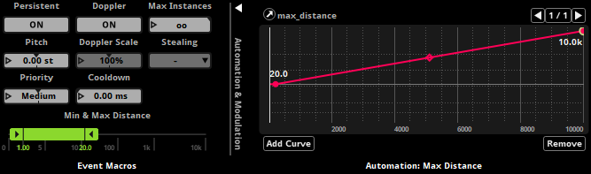
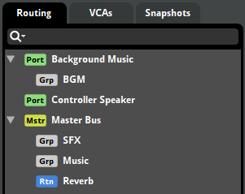
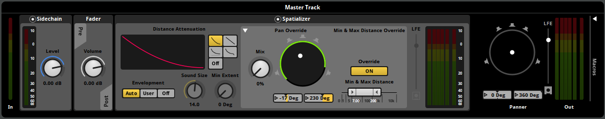
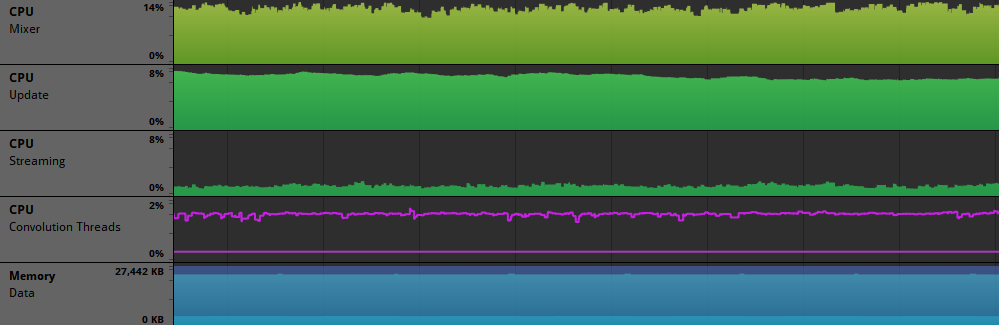

FMOD Studio User Manual 2.02
FMOD Studio 2.02 brings support for a whole new operating system, empowers spatializers and object spatializers with event-level distance, gives more flexibility to scatterer and command instruments, improves sidechains, and gives sound designers more control over their chosen platforms' special output hardware.
In addition to the new features listed, a number of additional stability and usability enhancements have been made. For full details see the detailed revision history.
FMOD Studio now has a native Linux version with support for a wide range of distributions.

The majority of the functionality supported on Windows and macOS is carried over to Linux with a few caveats:
The concept of minimum and maximum distance for spatialization and attenuation has long been a feature of FMOD spatializers. Now these properties have been promoted up to the event level.

This means any spatializer can now take advantage of min/max automation and modulation for greater flexibility. For compatibility, the 3D and object spatializers now provide an override for event min/max distance to retain the previous individual behavior.
Additionally by lifting these properties to the event level we can support the new built-in normalized distance parameter. Using a scale that runs from 0 (representing your event’s min distance) to 1 (representing your event’s max distance) you can design custom curves that can be shared between events with different min/max distance ranges.
Note: When migrating a project from a version earlier than 2.02, the event min/max distance will be set to match the values of the first FMOD spatializer or object spatializer found on the event. Additionally, preset FMOD spatializers and object spatializers will all be set to override with their current values.
Sending audio to auxiliary output ports has traditionally been a programmer task, but now it's part of the sound designer workflow within FMOD Studio.
With ports, you can make use of your target platforms' features for handling online voice chat and in-game music, route sound to individual controller and headset speakers, control controller vibration, and more.

The master bus is now shown in the routing browser, highlighting the fact that the new port buses are siblings, representing additional outputs from the system. You can specify the destination of each port within the port macros area of the mixer deck.
With every release we try to add more flexibility. Here are some recent additions:

Streaming and convolution CPU usage are now shown in the profiler.
